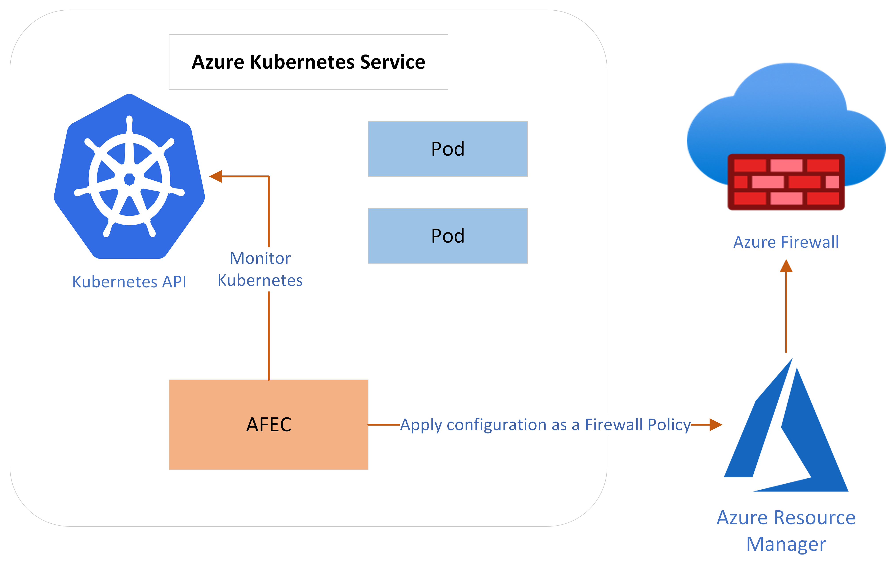

Introduction
Azure Firewall Egress Controller provides stricter policy enforcement at the Azure Firewall that is application aware in an automated fashion with real time updates as the AKS cluster grows and shrinks. AKS (Azure Kubernetes Service) workloads are secured using Azure Firewall as the egress firewall.
The Egress Controller runs in its own pod on the customer’s AKS. AFEC monitors a subset of Kubernetes Resources for changes. The state of the AKS cluster is translated to Azure Firewall specific configuration and applied to the Azure Resource Manager (ARM).
Existing architecture secures the egress traffic for the entire cluster.

Contributing
This project welcomes contributions and suggestions. Most contributions require you to agree to a Contributor License Agreement (CLA) declaring that you have the right to, and actually do, grant us the rights to use your contribution. For details, visit https://cla.opensource.microsoft.com.
When you submit a pull request, a CLA bot will automatically determine whether you need to provide a CLA and decorate the PR appropriately (e.g., status check, comment). Simply follow the instructions provided by the bot. You will only need to do this once across all repos using our CLA.
This project has adopted the Microsoft Open Source Code of Conduct. For more information see the Code of Conduct FAQ or contact opencode@microsoft.com with any additional questions or comments.
Trademarks
This project may contain trademarks or logos for projects, products, or services. Authorized use of Microsoft trademarks or logos is subject to and must follow Microsoft's Trademark & Brand Guidelines. Use of Microsoft trademarks or logos in modified versions of this project must not cause confusion or imply Microsoft sponsorship. Any use of third-party trademarks or logos are subject to those third-party's policies.